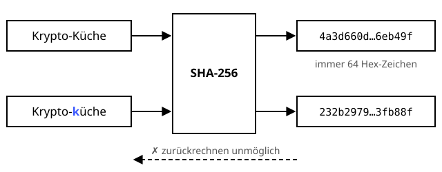

SHA-256-Hashfunktion
Schutzziele: Integrität
Der digitale Fingerabdruck – ein Krümel Unterschied und alles schmeckt anders.
Definition
Eine kryptografische Hashfunktion berechnet aus beliebig langen Daten einen kurzen Fingerabdruck fester Länge – bei SHA-256 sind das 256 Bit, also 64 Hex-Zeichen. Gleiche Eingabe ergibt immer den gleichen Hash, die kleinste Änderung einen völlig anderen. Aus dem Hash lässt sich die Eingabe nicht zurückrechnen, und man findet praktisch keine zwei Eingaben mit gleichem Hash.
Zutaten
- Daten beliebiger Länge (Text, Datei, Download …)
- Die Hashfunktion SHA-256 (Familie SHA-2)
- Ein vertrauenswürdiger Vergleichswert
Zubereitung
- Die Daten auffüllen (Padding + Länge) und in Blöcke zu 512 Bit aufteilen.
- Jeden Block in 64 Runden in einen internen Zustand von 256 Bit einarbeiten.
- Den Endzustand als Hashwert ausgeben.
- Der Empfänger berechnet den Hash aus den erhaltenen Daten erneut.
- Mit dem vertrauenswürdigen Wert vergleichen: Gleich bedeutet, die Daten sind unverändert.
Skizze

Ein einziger anderer Buchstabe ergibt einen völlig anderen Hash. Vom Hash zurück zum Text kommt man nicht.
Skizze erstellt von Claude (KI)
Demo
Platzhalter für die Demo
Tipps
- Ein Hash allein schützt nicht vor gezielter Manipulation: Wer die Daten austauschen kann, tauscht auch den Hash aus. Dagegen hilft ein HMAC oder eine Signatur.
- MD5 und SHA-1 gelten als gebrochen und sollten nicht mehr verwendet werden.
- Für Passwörter ist SHA-256 zu schnell – dafür gibt es Passwort-Hashing.
- Prüfsumme einer heruntergeladenen Datei unter Linux:
sha256sum datei.iso, unter Windows:certutil -hashfile datei.iso SHA256.